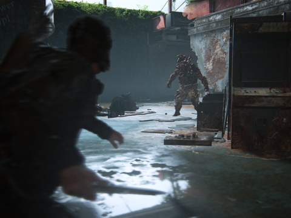
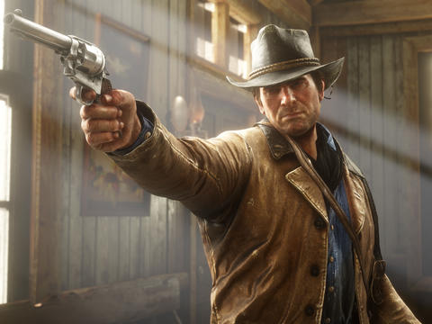
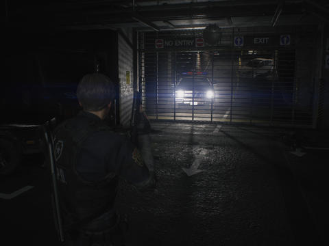

From your wheezing original PS4 to Nintendo's Switch, we've picked the best video games you can play across every console available
There’s nothing more contagious in video games than sequelitis, but even then, The Last of Us felt like a masterpiece that should have been left alone. Naughty Dog’s post-apocalyptic action-adventure was a crowning achievement at the end of the PS3’s life cycle, not only reinvigorating tired zombie and post-apocalyptic settings but elevating video game storytelling to the same maturity as any other medium. But after everything Joel and Ellie had been through, surely there was nothing more to add that wouldn’t diminish the power of its divisive and ambiguous ending. Of course, the incredible ‘Left Behind’ DLC proved there were more important stories to tell, while HBO have even greenlit a TV adaptation. So despite a title that’s in danger of becoming a running joke like Final Fantasy, The Last of Us Part II is anything but a superfluous sequel.
What would you want from a game eight years in the making? Red Dead Redemption 2 has a lot to live up to, not least because it includes people and places from the previous - and much beloved - game. It’s a strange beast, this one: enormous, glorious-looking, and boasting some of the best voice acting ever committed to the medium. Perhaps there should be poetry to describe its beauty. A world devoid of the constant buzzing of electronics you can’t live without in the present day, where nature is the only sound aside from the echo of shotgun fire and the random shouting of strangers stood in dankly lit shacks. Offering you sanctuary, and often met with mistrust and suspicion.
Well that was a surprise! The trailer thats started out looking like another teaser for Horizon: Zero Dawn actually turned out to be a chunky teaser for a new, completely unhinted-at God of War game. Blimey! It's easy to get confused - this game looks vastly different to everthing that's gone before it in the series - but having had a special, behind-closed-doors look at the game and a chat with the team that's making it, we're starting to piece together the facts at the heart of Kratos' return. So, with no further ado, here's everything we know about God of War, along with some of the key questions to which we don't yet have answers.


Calling Resident Evil 2 a remake does it little justice. The term, much like reboot and re-imagining, has a muddied meaning. It can suggest you're playing a newer – hopefully better – version of a game you've already played, or a completely overhauled take that's nearly unrecognizable from its source material. Resident Evil 2 is all these things and so much more.
Japan’s FromSoftware has forged a reputation for making tough-as-nails games, mostly thanks to its more recent slew of action RPG titles: Demon’s Souls, the Dark Souls trilogy and Bloodborne. All make star features of their consistently challenging combat, opaque mechanics and deliberately obtuse storytelling. Sekiro: Shadows Die Twice, From’s latest release, looks outwardly similar to the “Soulsborne” games, but needs to be approached in quite a different fashion. In fact, I think it’s arguably harder than any of its From-made predecessors – and likely the most demanding “mainstream” game that’ll be released this year.


Crossing the finish line in a racing game has never felt as inconsequential as it does in Forza Horizon 4. That's by no means a knock against the latest entry in Playground Games' rubber-burning series, but rather the highest compliment you can give a racing game. The simple act of driving, while soaking in some of the most gorgeous sights to ever grace any game, is so satisfying in Forza Horizon 4, the fact you're actually competing falls to the wayside. That's not to say winning isn't rewarding in Forza Horizon 4. On the contrary, leaving the competition in the dust carries its own thrills and rewards. But the blissful act of tearing up the blacktop from behind the wheel of a dream ride was enough to stretch a permanent smile across our face, even when we were dead last.